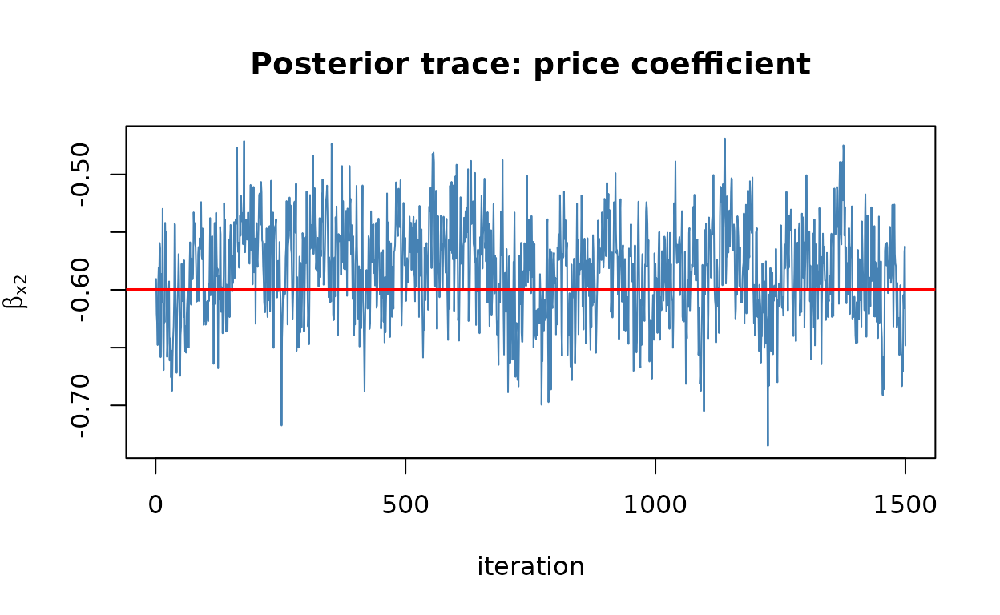

The multinomial probit (MNP) replaces logit’s restrictive error structure with a full multivariate-normal covariance, so it can capture rich correlation between alternatives without imposing IIA. choicer estimates it the Bayesian way: a Gibbs sampler with data augmentation, written in C++ with a reproducible, thread-safe random number generator.
Simulate from a probit process
simulate_mnp_data() draws choices with correlated normal
errors and known parameters.
sim <- simulate_mnp_data(N = 2000, J = 3, seed = 1)
sim
#> <choicer_sim: mnp>
#> settings:
#> N = 2000
#> J = 3
#> K_x = 2
#> base_alt = 1
#> rows in $data: 6000
#> true_params: beta, delta, SigmaRun the sampler
run_mnprobit() returns posterior draws. The settings
below keep this vignette quick; for real work use a longer chain and
inspect convergence carefully.
set.seed(3)
fit <- run_mnprobit(
data = sim$data,
id_col = "id",
alt_col = "alt",
choice_col = "choice",
covariate_cols = c("x1", "x2"),
mcmc = list(R = 4000, burn = 1000, thin = 2)
)
#> MCMC run time 0h:0m:0.68s
summary(fit)
#> Bayesian Multinomial Probit (MNP) model
#>
#> Parameter Mean SD 2.5% Median 97.5%
#> x1 0.784098 0.045637 0.699207 0.784063 0.874743
#> x2 -0.583731 0.041139 -0.663752 -0.581591 -0.506443
#> ASC_2 0.475191 0.043400 0.386551 0.476124 0.556880
#> ASC_3 -0.535270 0.107072 -0.792166 -0.522177 -0.358784
#>
#> Covariance of utility differences (Sigma, identified scale):
#> Parameter Mean SD 2.5% Median 97.5%
#> Sigma_11 1.000000 0.000000 1.000000 1.000000 1.000000
#> Sigma_21 0.421483 0.135394 0.120788 0.431610 0.680176
#> Sigma_22 1.421073 0.279614 0.965189 1.391781 2.003076
#>
#> Posterior mean Sigma:
#> w_2 w_3
#> w_2 1.0000 0.4215
#> w_3 0.4215 1.4211
#>
#> Base alternative: 1
#> Draws kept: 1500 (R = 4000, burn = 1000, thin = 2, seed = 721735354)
#> N: 2000 | Parameters: 4
#> Sampling time: 0.68 s
#> Identification: per-draw normalization by sigma_11 (McCulloch-Rossi 1994).The Sigma entries are the error-covariance parameters —
the flexibility that distinguishes probit from logit. They are
identified only up to scale, so choicer reports them on the normalized
scale where Sigma_11 = 1.
Posterior recovers the truth
recovery_table(fit, sim$true_params)
#> <choicer_recovery> model=choicer_mnp level=0.95
#> parameter group true estimate se bias rel_bias_pct z_vs_true
#> <char> <char> <num> <num> <num> <num> <num> <num>
#> 1: x1 beta 0.8 0.7841 0.0456 -0.0159 -1.988 -0.3484
#> 2: x2 beta -0.6 -0.5837 0.0411 0.0163 -2.712 0.3955
#> 3: ASC_2 asc 0.5 0.4752 0.0434 -0.0248 -4.962 -0.5716
#> 4: ASC_3 asc -0.5 -0.5353 0.1071 -0.0353 7.054 -0.3294
#> 5: Sigma_11 sigma 1.0 1.0000 0.0000 0.0000 0.000 NA
#> 6: Sigma_21 sigma 0.5 0.4215 0.1354 -0.0785 -15.703 -0.5799
#> 7: Sigma_22 sigma 1.5 1.4211 0.2796 -0.0789 -5.262 -0.2823
#> lower_ci upper_ci covers
#> <num> <num> <lgcl>
#> 1: 0.6947 0.8735 TRUE
#> 2: -0.6644 -0.5031 TRUE
#> 3: 0.3901 0.5603 TRUE
#> 4: -0.7451 -0.3254 TRUE
#> 5: 1.0000 1.0000 TRUE
#> 6: 0.1561 0.6869 TRUE
#> 7: 0.8730 1.9691 TRUEA quick MCMC diagnostic
Posterior draws are stored on the fit, so the usual diagnostics are a line away. A trace plot of the price coefficient should look like a stationary “fuzzy caterpillar”:
beta_draws <- fit$draws$beta
plot(beta_draws[, "x2"], type = "l", col = "steelblue",
xlab = "iteration", ylab = expression(beta[x2]),
main = "Posterior trace: price coefficient")
abline(h = sim$true_params$beta[2], col = "red", lwd = 2)
The red line marks the true value; the chain should hover around it. For a faster, frequentist alternative with the same post-estimation toolkit, see the multinomial logit and mixed logit vignettes.